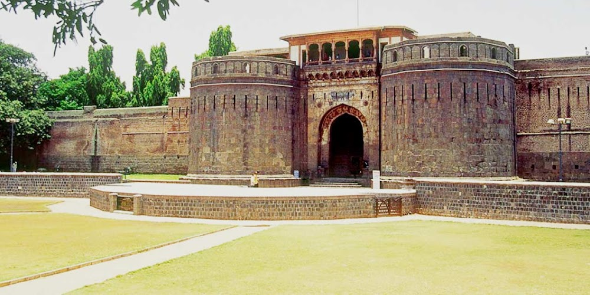
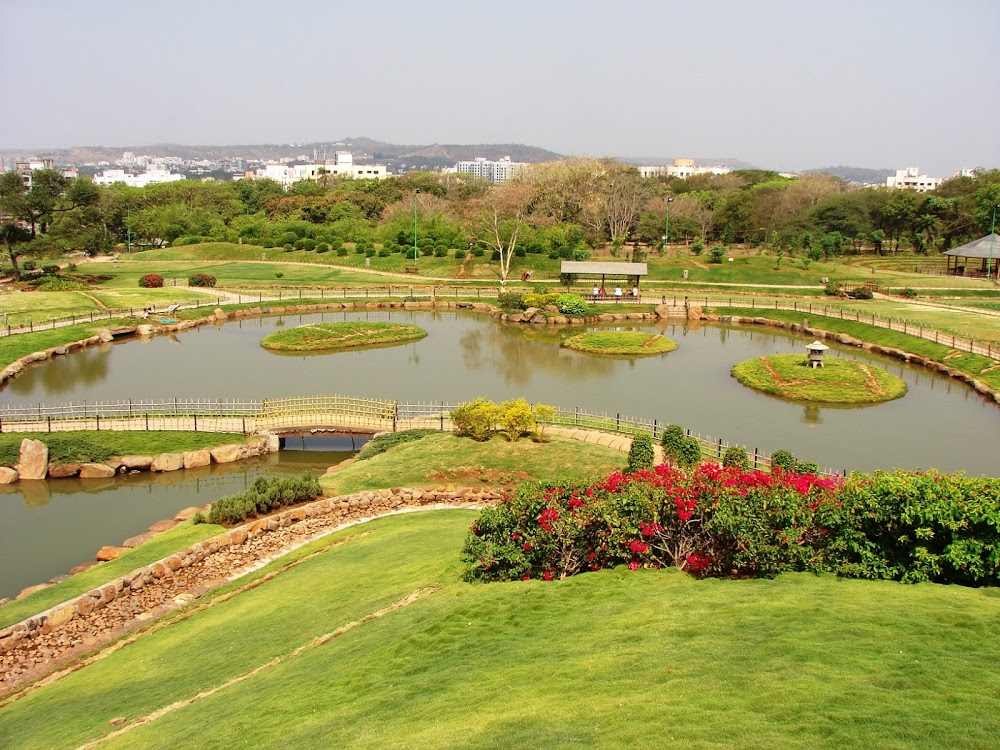
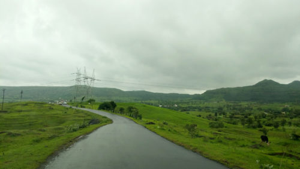
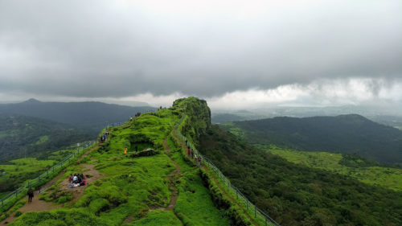
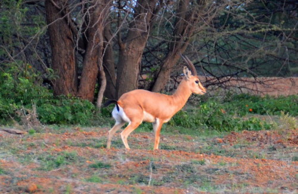

Shaniwar Wada
Built way back in the early 18th century, Shaniwar Wada once served as the fortified seat of the Peshwa empire until they lost control to the British East India Company in the early 19th century. Post that, there was an unexplained fire here that destroyed large parts of the fort. However, the remnants have been maintained as a tourist site.The love story of Bajirao and Kashi began here and so did the unfinished love story of Bajirao-Mastani. The palace has been widely acclaimed for its ancient architecture. However, in recent times, paranormal activities have been reported here. To showcase the rich history of ancient India, light and sound shows are organized here in the evenings every day. Marathi show timings are from 7:15 pm to 8:10 pm and English show timings are from 8:15 pm to 9:10 pm. There is a nominal ticket price of Rs. 25 per head for these shows
Bund Garden
A serene garden right in the heart of the city is home to exotic migratory birds during winters. Horse riding sessions and magic shows are also hosted in this unique garden that is surrounded by mini dams built over the Mula River. While here, you can also go boating across the river. Dam, translated to Bund in Hindi, is where the garden derives its name from. It is also known as Mahatma Gandhi Udyan as it spans across the river till the Gandhi National Memorial. With its tranquil ambiance and majestic natural beauty, it is most definitely one of the best places to visit in Pune with friends in the evenings.
A super scenic road trip to Veer Dam
Google Maps might take you into narrow unknown roads, sometimes into dead ends. But that’s the charm of discovery. Off late, i have been spending lot of time zooming into maps and then finding roads in areas which have hills. Most of these “white roads” are not visible in the normal zoom of maps. Zoom inside and a whole network is there ready to be explored 🙂
Lohagad Fort Scorpion’s Tail – VinchuKata
Lohagad fort would be one of the best representations of what a Maharashtra monsoon has to offer – its history in forts and the scenic beauty during the monsoon. Climbing the fort requires a short walk of round 30 minutes and it is easy for the most part except a few patches which can become slippery in the rain. Otherwise, people of all ages can easily go to Lohagad fort
Mayureshwar Wildlife Sanctuary near Supe
Mayureshwar is near Supe, approachable from Solapur road. See the route map from Magarpatta city below. There are public roads through the sanctuary. There is an office at the entrance where you have to pay the entry fees: Per person: 30 INR, per car: 100 INR, per camera: 50 INR. Technically, you can just drive through without paying, but i guess it is better to pay this small amount than be stopped by the forest guards and asked lot of questions! From the main road, you will see a dirt road (with a barrier) going inside the forest. This is where you will start your “drive-through”. Switch to earth mode on google maps and all the dirt tracks will be visible